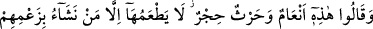
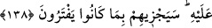

Allah Teâlâ mâni olmaya kadir olduğu halde onları, kendi hallerine bırakmıştır. O halde
sen de onları yaptıkları ile baş başa bırak. Çünkü onların, bu yaptıklarından ötürü
hesaba çekilecekleri bir yer ve zaman vardır. Allah’ın dilediği her hususda büyük
hikmetler vardır.
138. Onlar saçma düşüncelerine göre dediler ki:”Bu (tanrılar için ayrılan)
hayvanlarla ekinler haramdır. Bunları bizim dilediğimizden başkası yiyemez. Bunlar
da binilmesi yasaklanmış hayvanlardır.” Birtakım hayvanlar da vardır ki, (Allah
böyle emrediyor diye) O’na iftira ederek üzerlerine Allah’ın adını anmazlar.
Yapmakta oldukları iftiraları yüzünden Allah onları cezalandıracaktır.
Hiçbir delil olmaksızın kendi bâtıl “zanlarınca dediler ki: “Bunlar” yani, putları
için ayırdıkları ekinler ve hayvanlar, “dokunulmaz” haram “hayvanlar ve ekinlerdir.
Bunları bizim dilediğimizden” yani ilahlarımızın hizmetine bakanlardan ve erkeklerden
“başkası” kadınlar “yiyemez.”
Müşrikler öncekilerden ayrı olan bazı hayvanlara işaret ederek şöyle dediler:
“Bunlar da sırtı(na binilmesi) yasaklanmış hayvanlardır.” Bununla kulağı yarılıp
işaretlenmiş “bahîra”, putlara adanan “sâibe” ve serbest bırakılan “hâm” hayvanları
kastediyorlardı (bk. el-Mâide, 5/103).
Yine yukarıda zikredildiği üzere “bir kısım hayvanları da üzerlerine Allah’ın adını
anmadan boğazlarlar.”
“Üzerlerine Allah’ın adını anmazlar” ifadesi, “bir kısım hayvanları” tanımlamaktadır,
onlara ait bir sıfattır. Fakat bu ifade yukarıdan beri nakledilen müşriklerin sözlerine
dâhil değildir. Bilakis Kur’an’ın başka yerlerindeki benzerleri gibi tanımlanan şeyin
belirlenmesi ve onun başkalarından ayırt edilmesi için Allah Teâlâ tarafından
sevkolunmuş bir ifadedir. Nitekim bir tefsîre göre: “Biz Allah’ın elçisi, Meryem oğlu
İsa Mesih’i öldürdük.” (en-Nisa, 4/157) âyetinde de “Allah’ın elçisi” ifadesinin
durumu aynıdır.
Sanki şöyle buyurulmaktadır: Putları için kestikleri hayvanlar üzerine Allah’ın adını
anmıyorlar, putların adını anıyorlardı.
Bütün bunları “Allah’â iftira ederek yapıyorlardı” ve kendilerine bunu Allah’ın
emrettiğini iddia ediyorlardı. “Allah onları, bu iftiraları sebebiyle cezalandıracaktır.”